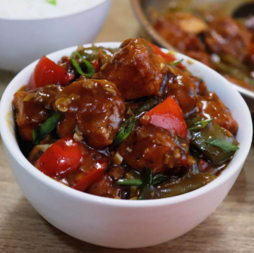

ChilliChicken

Description
Chilli Chicken is the undisputed king of Indo-Chinese cuisine—a bold, fiery dish where bite-sized pieces of marinated chicken are batter-fried until crisp and tossed in a glossy, savoury sauce. Bursting with the punchy flavours of fresh garlic, ginger, green chillies, and soy sauce, every bite strikes an addictive balance between spicy, tangy, and mildly sweet.
Depending on how you like to serve it, the dish comes in two classic styles: a dry version with a sticky glaze that works as a crowd-pleasing appetizer, or a gravy version thickened with cornflour that pairs effortlessly with fried rice or hakka noodles. Tossed with crunchy cubes of onion and capsicum over high heat, it delivers that unmistakable restaurant-style smoky aroma right in your home kitchen.
Ingredients
- 500g boneless chicken thighs or breast, cut into bite-sized cubes
- 1 tablespoon ginger-garlic paste
- 1 tablespoon soy sauce (plus 1 tablespoon extra for the sauce)
- 1/2 teaspoon black pepper powder
- 3 tablespoons cornflour (plus 1 tablespoon mixed with 1/4 cup water for the slurry)
- 2 tablespoons all-purpose flour (maida)
- 1 egg white, lightly beaten
- Oil for frying
- 1 medium onion, cut into large petals/cubes
- 1 medium green capsicum, cut into cubes
- 1 tablespoon garlic, finely chopped
- 1 teaspoon ginger, finely chopped
- 2 to 3 green chillies, slit lengthwise
- 1 tablespoon red chilli sauce
- 1 teaspoon tomato ketchup
- 1 teaspoon white vinegar
- Salt to taste
- Chopped spring onion greens, for garnish
Steps
- Marinate and coat the chicken: In a bowl, mix the chicken cubes with ginger-garlic paste, 1 tablespoon soy sauce, black pepper, and salt. Add the cornflour, all-purpose flour, and egg white, tossing until the pieces are evenly coated.
- Fry until crisp: Heat oil in a kadhai over medium-high flame. Fry the coated chicken in batches for 4 to 5 minutes until golden and crisp, then drain on paper towels.
- Sauté the aromatics: Heat 1.5 tablespoons of oil in a wok over high heat. Add the chopped garlic, ginger, and slit green chillies, stir-frying for 20 seconds until fragrant.
- Toss the veggies: Add the onion petals and capsicum cubes. Stir-fry on high heat for 1 to 2 minutes so they stay crisp and slightly charred at the edges.
- Make the glaze: Lower the heat slightly and stir in the remaining soy sauce, red chilli sauce, tomato ketchup, and vinegar. Pour in the cornflour-water slurry and simmer for 30 seconds until the sauce thickens and turns glossy (add a splash of water if you prefer a gravy version).
- Combine and serve: Toss the crispy fried chicken into the sauce until every piece is evenly glazed. Garnish with chopped spring onion greens and serve immediately.
Home